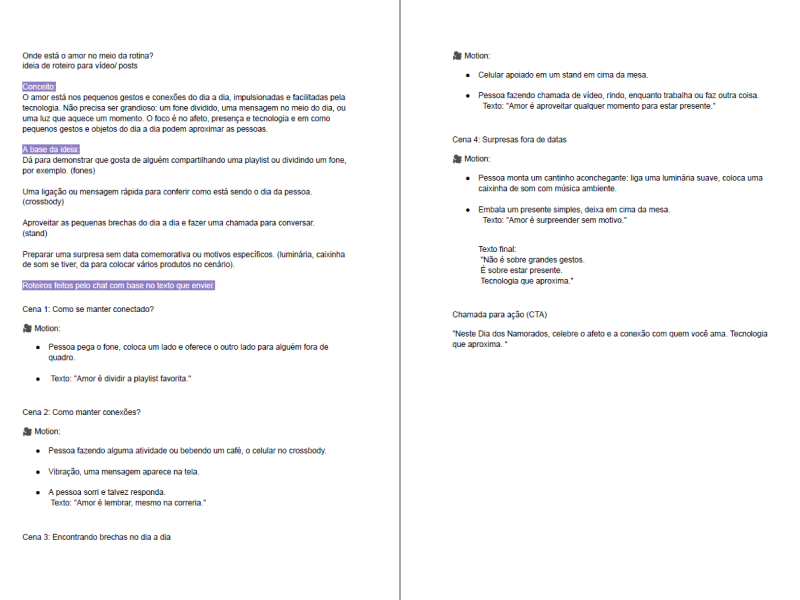
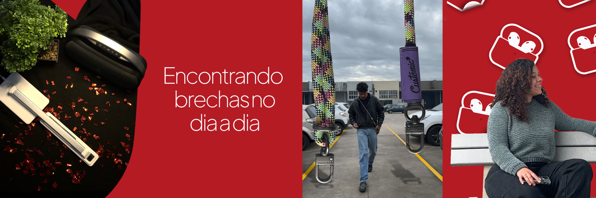

Case · Audiovisual · Mobifans
Dia dos
Namorados.

01 — Contexto / Problema
campanha · 4 vídeos · 7 diasPara o Dia dos Namorados 2026, a Mobifans precisava de uma campanha audiovisual completa — com captação, edição e motion graphics — publicada em sequência ao longo de uma semana no Instagram, gerando antecipação para a data.
O desafio era produzir 4 reels com identidade visual coesa — que parecesse campanha, não posts avulsos — mantendo variedade suficiente para que cada vídeo tivesse razão de existir individualmente na timeline.
Contexto
Mobifans — campanha de Dia dos Namorados. 4 vídeos publicados entre 05 e 11 de junho de 2026, com intervalo de 2 dias entre cada publicação.
Problema central
Criar uma campanha audiovisual com produção e identidade visual próprias, usando os produtos Mobifans como protagonistas — captação, edição e motion em um fluxo contínuo.
Oportunidade
Campanha seriada — 4 vídeos que constroem antecipação gradual até o dia 12 de junho, com motion graphics que reforçam a identidade de marca em cada peça.
02 — Meu Papel
captação · edição · motionCaptação
Direção e captação das cenas — iluminação, enquadramento e direção dos takes para o formato vertical 9:16 do reel, com foco nos produtos Mobifans como protagonistas.
Edição
Edição no Premiere Pro — seleção de takes, corte no ritmo da música, correção de cor e tratamento de imagem para manter consistência visual entre os 4 vídeos da campanha.
Motion Graphics
Animações de texto, transições e elementos gráficos no After Effects — reforçando a identidade de marca e criando o fio visual que conecta os 4 vídeos da campanha.
03 — Processo & Solução
roteiro · captação · edição · publicação
Passo 01 · RoteiroCada vídeo da campanha foi planejado como uma peça independente dentro de um arco narrativo de sete dias. O primeiro vídeo (05/06) apresenta os produtos; os do meio desenvolvem o contexto romântico; o último (11/06) finaliza com o CTA direto para a data.
A decisão de design mais importante foi o sistema de motion graphics compartilhado — elementos gráficos reutilizados entre os 4 vídeos (fonte, animação de entrada, paleta) que criam a sensação de campanha sem exigir que o espectador tenha visto os vídeos anteriores para entender o atual.

VÍDEOS 01, 02 & 03 · 05 · 07 · 09 JUN04 — Resultado
publicado · ao vivo no Instagram4
Vídeos publicados
7 dias
Duração da campanha
Campanha audiovisual completa entregue e publicada. 4 reels produzidos do zero — captação, edição e motion — e publicados ao longo de 7 dias no Instagram da Mobifans, cobrindo a semana do Dia dos Namorados. Ver ao vivo: